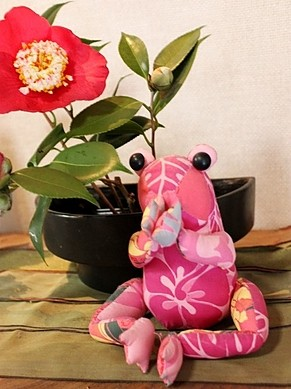

HOME

高松・屋島にある玄米・マクロビランチを楽しめる、
そして若石健康法の足もみもできるお店です。
「健康は 食から 足から 笑いから」をモットーに
「セルフケアのススメ」を発信しています！
屋島を一望できる店内で心も体も癒されたい方、セルフケアで体を整えたい方、アットホームな雰囲気で楽しみたい方、お気軽に足を運んでみてくださいね。 【健康発信カフェ】としてのこかげは、食指導や足もみなど【セルフケア】をお伝えしています。 ランチは水・木・金の営業ですが、週が変則的なのでちょっぴりご注意ください。(カレンダーをご覧ください) 座席数が少ないため、【予約優先】となります。当日でもお気軽にお電話くださいね。 |
カレンダー初期画面の右上の「閉じる」を押すと、月ごとの営業日が表示されます
ごあいさつ
こんにちは、オーナーの佐藤真理子です。 2001年の出産以来、二人目不妊治療すること５年。人工授精５回、体外受精２回するも授からず、諦めて、自分らしく生きようと2009年5月にカフェオープン。 不妊治療中に出会った「マクロビ料理」、お砂糖や動物性を使わずともこんなお料理ができるんだ！家でも作ってみよう！と思っていただけるマクロビランチのカフェとして、「こころ・からだ・げんき」の頭文字をとって「こかげ」と名前をつけました。 ところが、【食を変えたら】42才で まさかの 妊娠・出産！ 2012年6月に次女を出産し、高齢出産ママながら、子育て・家事・カフェ経営と奮闘しています。 妊娠中に5秒で出来る玄米食「玄米酵素ハイゲンキ」をしっかり食べて、お米も食べて 一人目のときに叶わなかった「完全母乳育児」もできました！ ありがたや～～。 すごい、ホンマに「自分の体は自分の食べたもので出来ている」実感！ タイムマシンがあるならば、不妊治療中の自分にささやきたい。 「食べるものが大事です」 ところが、 ところが、 子育てしながらカフェ経営（ちなみに長女と次女は11才差）・・・頑張り過ぎて、2017年子宮トラブルが発生しました。がーん。 生理が2か月止まらず、貧血状態に。どーん。 感情を受け止めると言われる子宮。そして、5年に渡る不妊治療がダメージを与えたのでしょう。むしろ、玄米酵素を食べていたからこれぐらいで済んだと思っています。・・・ありがたや。 とはいえ、 食は整っても、運動が足らないことや睡眠の質も悪いことから、子宮トラブルを生んだのだ、と反省しました。 その時、神様の導きかと思える出会いがありました。 自分の体のメンテナンスをする「足もみ」。 それから 「足もみと玄米酵素、そして毛染めをヘナにする」ことを徹底し、なんと3か月で生理が正常に戻りました。これで、医者から言われた「子宮全摘」を免れました。 身体って正直・・・・！！！ 食と、運動と、ストレスのない（少ない）生活をするのに すべてにおいての「セルフケア」大事、と痛感ですね。 2018年4月、自然食カフェこかげをリニューアル、「マクロビと足もみの店 こかげ」として 「健康は 食から 足から 笑いから～セルフケアのススメ～」 をモットーにますます健康発信していくことにしました。 4コママンガつきのこかげ新聞（毎月発行）で笑いを添えて、セルフケアとともに皆様に元気をお届けしていきます！ |
プロフィール
佐藤 真理子
香川県坂出市出身。現在は高松市在住。
18才から10年間を関西で暮らし、29才で結婚。
子育てしながらカフェ営業、そして、料理教室や健康講座を開催しています。
「まりひんさん」って気軽に声をかけてくださいね。
香川県坂出市出身。現在は高松市在住。
18才から10年間を関西で暮らし、29才で結婚。
子育てしながらカフェ営業、そして、料理教室や健康講座を開催しています。
「まりひんさん」って気軽に声をかけてくださいね。

店内にはカエルの置物がいっぱい。実はカエラーのまりひんです。
いろんなカエルがお客様をむ「かえる」のでお楽しみに♪
いろんなカエルがお客様をむ「かえる」のでお楽しみに♪

メール会員登録
会員登録は携帯電話・スマートフォンのみ対応しています
携帯電話・スマートフォンでQRコードを読み取って下さい
携帯電話・スマートフォンでQRコードを読み取って下さい
本文は空のまま送信してください。
mailr.kokage-m.com